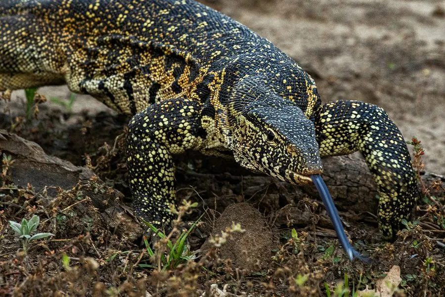

爬行动物 · 动物界
尼罗巨蜥 Varanus niloticus

非洲水域附近的大型蜥蜴，擅长游泳和攀爬，会潜入鳄鱼巢中偷食鳄鱼蛋，是非洲水边常见的巨蜥之一。
- 分类
- 门脊索动物门纲爬行纲目有鳞目科巨蜥科属巨蜥属
- 栖息环境
- 非洲撒哈拉以南的河流、湖泊、沼泽与河岸灌丛
- 地理分布
- 非洲撒哈拉以南大部分地区；被引入美国佛罗里达等地
- 保护级别
- IUCN 无危（LC）；CITES 附录 II；非中国原产
物种志
尼罗巨蜥体长 1.2–2 米，个别可达 2.4 米，是非洲最大的蜥蜴之一。它吻部细长，体色以灰褐、橄榄褐为主，背部和四肢有浅黄色斑点与横纹，尾部侧扁而强壮，既能划水也能抽打自卫；脚趾长而锐利，善于攀爬树木和岩壁。
它广泛分布于非洲撒哈拉以南的河流、湖泊与沼泽附近，白天活动，捕食鱼类、蛙、蟹、蜗牛、鸟卵，也会潜入鳄鱼巢中偷食鳄鱼蛋，甚至捕食幼鳄。每年旱季繁殖，雌蜥在沙土或白蚁丘中产卵约 20–60 枚，孵化期约 6–8 个月。它常被当地人捕食或作为宠物贸易对象，也被引入美国佛罗里达等地形成入侵种群，目前野外种群整体较稳定，被列为无危物种。
形态与习性
- 食性鱼类、蛙、蟹、蜗牛、鸟卵及幼鳄
- 体长1.2–2 m，最长可达 2.4 m
- 体重约 3–8 kg
- 寿命约 10–20 年
- 繁殖卵生，每窝 20–60 枚，孵化约 6–8 个月
- 活动节律昼行性，善游泳和攀爬
- 特点尾部侧扁有力，可划水也可抽打自卫
趣味知识
- 尼罗巨蜥会潜入鳄鱼巢中偷食鳄鱼蛋，即使成年鳄鱼在附近也敢冒险。
- 它的尾巴侧扁，既能当桨划水，也能像鞭子一样抽打自卫。
- 尼罗巨蜥被引入美国佛罗里达后建立了入侵种群，威胁当地小型动物。